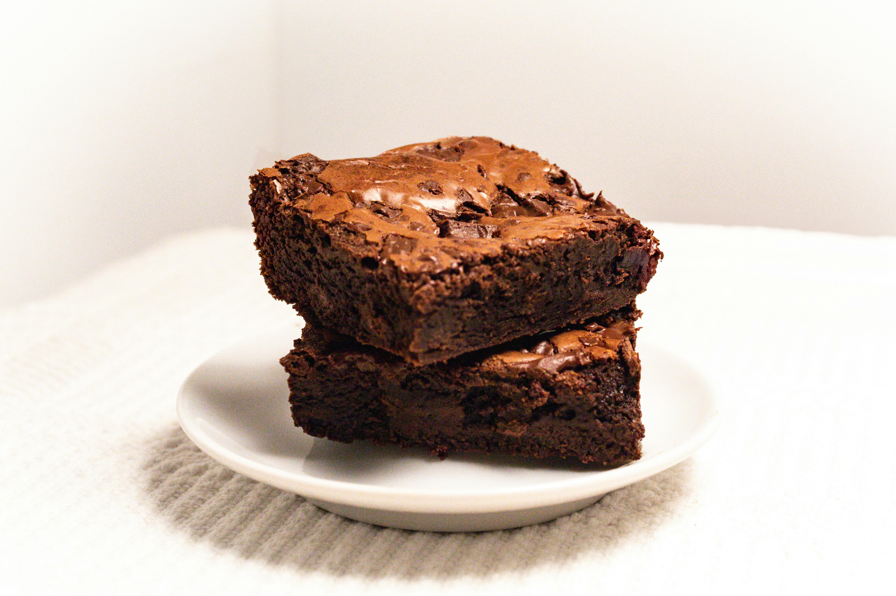

Double Fudge Brownies

Description:
These double fudge brownies are easy to make. They are delicious warm with a little vanilla ice cream.
Ingredients
- 1 1/2 cups sugar
- 2/3 cup butter
- 1/4 cup water
- 12 oz semi-sweet chocolate chips
- 2 tsp vanilla
- 4 eggs
- 1 1/2 cup flour
- 1/2 tsp salt
- 1/2 tsp baking powder
Steps
- Preheat oven to 325 degrees. Line a 13 x 9 x 2 pan.
- Combine sugar, butter, water in small sauce pan. Bring to a boil and remove from heat.
- Add the chocolate chips and vanilla to heated mixture. Stir until chocolate is all metled. Transfer to a large bowl.
- Beat in eggs, one at a time, to mixture.
- In separate bowl, combine flour, salt, and baking powder.
- Add flour mixture to chocolate mixture.
- Pour in lined pan and bake for 50 minutes.